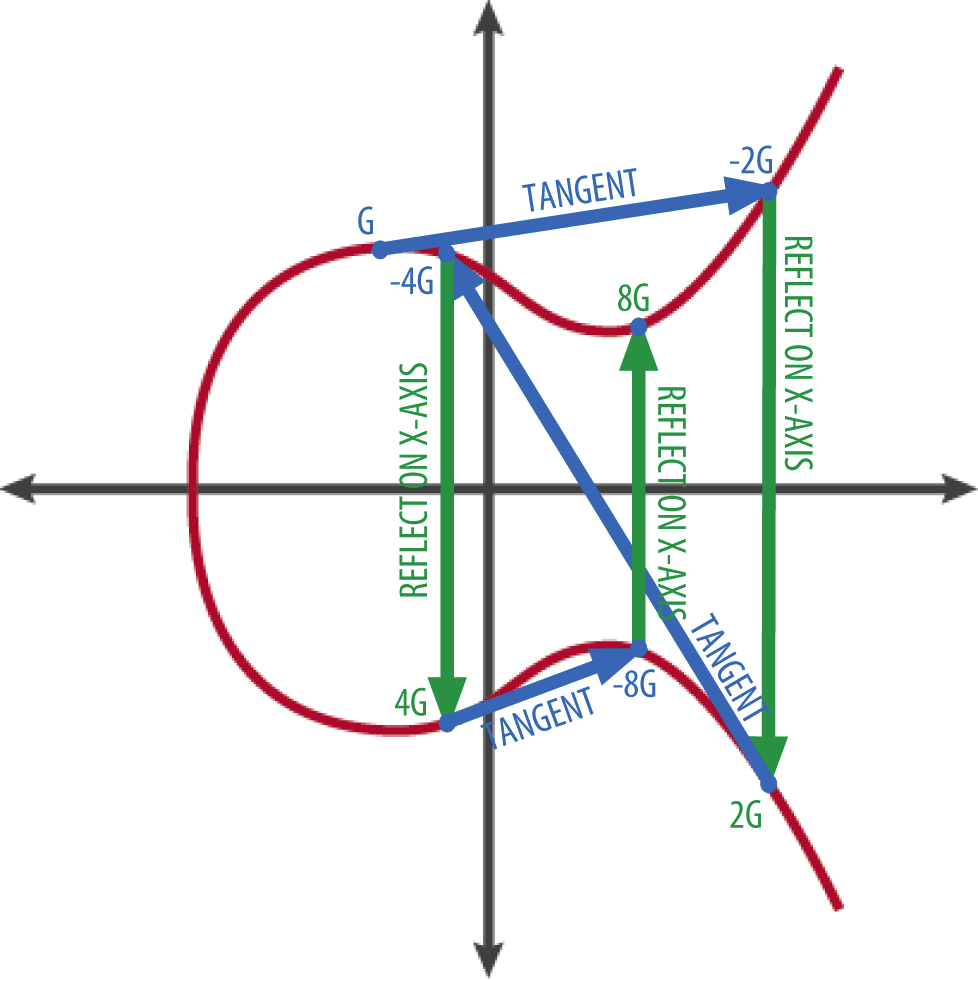

- automatically published
Technical overview
- This section could be far more detailed, but this is pretty complex stuff. Instead, there’s plenty of books andwebsites that do a more thorough job, if the reader is interested. Each subsection will include a good external link where more depth can be found. This whistle stop tour of the main components of the protocol should provide enough grounding, but it’s not essential reading for non technical readers.
ECDSA / SHA256 / secp256k1
- These technologies tend to use the same underpinning elliptic curvecryptography, and it makes sense to unpackthis here just once, only in the context of Bitcoin, as this will be themain focus of our attention.
- Public keys are a huge number used in conjunction with an algorithm toencrypt data. This allows a remote party to interact with an actor onthe network whose private keys can decrypt that same data.
- In Bitcoin the ECDSA algorithm is used on thesecp256k1 elliptic function tocreate a trapdoor. This (essentially) one way mathematical operation wasoriginally the “discrete log problem” and part of the research incryptography by Diffie and Hellman.diffie1976new This is what bindsthe public and private keys in a key pair (the foundation of the wholespace).
- In their mathematical construct a modulus operator creates an infinitenumber of possible variations on operations which multiply enormousexponential numbers together, in different orders, to create key pairs.In order to reverse back through the ‘trapdoor’ a probably impossiblenumber of guesses would have to be applied.
- Latterly, elliptic curves such as the secp256k1 curve used in Bitcoinhave substantially simplified the computation problems. Rather thanexponentials used by Diffie Helmman instead a repeated operation isapplied to an elliptic curve function, and this itself creates adiscrete log problem trapdoor in maths, far more efficiently. Figure3.11suggests how this works.
- This makes it easier, faster, and cheaper to provide secure key pairs onbasic computational resources. Elliptic curve solutions are not‘provably’ securegayoso2018secure inthe same way as the Diffie-Hellman approach, and the security of thissystem is very sensitive to the randomness which is applied to theoperation. Aficionados of Bitcoin use dice rolls or even moreexoticmeans to add entropy (randomness) when creating keys. This really isn’tnecessary, the software does this well enough.
- ECDSA has already been replaced by the more efficient Schnorr signaturemethodschnorr1989efficient which uses the same mathematical curve sois backward compatible. This will take some time for organic adoption,and ECDSA will never be deprecated.

- Given a start point on the curve and a number of reflection operations it’s trivial to find a number at the end point, but impossible to find the number of hops from the two end points alone. (CC Mastering Bitcoin second edition)
Analysis of the underlying security
- The evidence available paints a picture of strong and improving but notironclad cryptographic robustness.
Who is involved:
- Pieter Wuille, Gregory Maxwell, and Andrew Poelstra are some of the most prominent Bitcoin Core developers and cryptographers. Their extensive experience and contributions to Bitcoin speak to their credentials.
- Jonas Nick is a cryptography researcher who has published analyses of Bitcoin’s ECDSA signature scheme.
- Tim Ruffing, Pedro Moreno-Sanchez, and Yannick Seurin are cryptographers who have published academic papers analysing and improving Bitcoin’s cryptographic constructions.
- Tadge Dryja is one of the original Lightning developers and an MIT DCI researcher focused on Bitcoin’s cryptography.
- Arvind Narayanan is a professor at Princeton who has published seminal works on Bitcoin and cryptocurrency cryptography.
- Aviv Zohar at the University of Jerusalem has helped identify still extant vulnerabilities in the Lightning network.harris2020flood
- There are likely many other credentialed cryptographers working on Bitcoin, but these are some of the most well-known examples. The common thread is a strong academic background in cryptography.
Where critical analysis is published:
- Many analyses have been published at top cryptography and security conferences like IEEE S&P, ACM CCS, Financial Cryptography, and Real World Crypto. These are generally highly regarded venues.
- Academic journals like Journal of Cryptography, Ledger, and Journal of Cryptographic Engineering have also published peer-reviewed papers. The impact factors are not as high as broader CS journals however.
- Bitcoin Improvement Proposals (BIPs) also undergo scrutiny by expert reviewers.
- There is still room for more peer review in top journals, but publication venue credibility is generally decent.
Test of time:
- Bitcoin has been live since 2009 and its core cryptographic protocols have stood the test of time so far, with no major breaks of ECDSA, SHA256, RIPEMD160, etc despite enormous incentives.
- That being said, 13 years is short in cryptography timescales. Continued analysis over decades is ideal.
- Some newer proposals like Taproot have undergone less time testing but build on proven constructions.
Academic acceptance:
- Acceptance has been increasing steadily, with a growing number of peer-reviewed academic papers, PhD dissertations, and university courses on Bitcoin cryptography.
- Funding remains limited but is increasing through organizations like Square Crypto that fund open source work.
- Controversy around Bitcoin’s social implications persists but its technical merit and cryptography seem to be gaining more mainstream academic respect.
Addresses & UTXOs
- Ethereum has addresses which transactions flow in and out of. This issynonymous to a bank account number and so makes intuitive sense tousers of banks. This is not the case in Bitcoin.
- Bitcoin is a UTXO model blockchain. UTXO stands for unspent transactionoutput, and these are ‘portions’ of Bitcoin created and destroyed asvalue changes hands (through the action of cryptographic keys). They arethe basis of the evolving ledger. This process is described well byRajarshi Maitra in thispost.
- it“Every Transaction input consists of a pointer and an unlocking key.The pointer points back to a previous transaction output. And the key isused to unlock the previous output it points to. Every time an output issuccessfully unlocked by an input, it is marked inside the blockchaindatabase as ‘spent’. Thus you can think of a transaction as an abstract“action” that defines unlocking some previous outputs, and creating newoutputs. These new outputs can again be referred by a new transaction input. AUTXO or ‘Unspent Transaction Output’ is simply all those outputs, whichare yet to be unlocked by an input. Once an output is unlocked, imagine they are removed from circulatingsupply and new outputs take their place. Thus the sum of the value ofunlocked outputs will be always equal to the sum of values of newlycreated outputs (ignoring transaction fees for now) and the totalcirculating supply of bitcoins remains constant.”
- Fresh UTXOs are created as coinbase transactions, rewarded to miners whosuccessfully mine a block. These can be spent to multiple output asnormal. This is how the supply increases over time.
Bitcoin script and miniscript
- A Bitcoin script is a short chunk of code written into each transactionwhich gives conditions for the next UTXO transfer (spend). Bitcoinscript is a programming language invented by Satoshi Nakamoto as part ofthe Bitcoin system. It’s a stack-based language, similar to reversePolish notation, used to encode transactions and specify the conditionsunder which a Bitcoin address can be spent. Bitcoin script has 256 opcodes, some of which are deprecated or can cause the program to fail.
- Miniscript is a higher-level language that makes it easier to writerobust Bitcoin smart contracts on chain. It smooths out the rough edgesof Bitcoin script and makes it more accessible for non-technical usersto understand and use. Miniscript provides a more intuitive way tospecify spending conditions, making it easier for users to create smartcontracts without needing to be an expert in programming languages likeRust or C++. Miniscript takes the basket of 256 op codes in Bitcoinscript and simplifies them, making the most commonly used op codes moreaccessible and usable for average users. The limited scriptinglanguage and the features builtinto wallets on top, allow for some clever additional options besidereceiving and spending. In fact, some of the more innovative featuressuch as discrete log contracts (detailed later) are quite powerful, andcan interact with the outside world. Scripts allow spends to becontingent on multiple sets of authorising keys, time locks into thefuture, or both.
- Time locks can be either block height-based or wall time-based, butMiniscript ensures that the user has to choose one or the other within asingle Bitcoin script. This is because some of the time lock opcodeslike “check lock time verify” (CLTV) and “op sequence verify” changetheir behavior based on whether the code is four or five bytes long.Miniscript removes these quirks by providing a unified and moreintuitive way to write smart contracts. An example of Miniscript’sfunctionality is a decaying multi-sig where a five of five multi-sig canbe changed over time to a four or five multi-sig, or a three of fivemulti-sig, in case one or two keys are lost. This provides the user withmore control and flexibility over their money and allows forcontingencies in case of loss events. Additionally, Miniscript enablesusers to have more control over theirfunds by setting ruleswhen money is put into a Bitcoin address, as well as allowing forcorporate governance situations. Miniscript can also be used forinheritance planning, where a child’s key can be made to activate aftera certain number of blocks have passed, creating a “dead man switch”functionality on the chain.
- Overall, Miniscript enables users to have more control and flexibilityover their funds, making Bitcoin smart contracts more robust and secure,but it’s important to note that this is new technology and not yetintegrated into user wallets.
Halving
- As mentioned eariler, roughly every four year the ‘block reward’ given to miners halves. This gives the issuances schedule of Bitcoin; it’s monetaryinflation. This controlled supply’ feature was added to emulate the growth of physical asset stocks through mining. It’s exhaustively explainedelsewhere and is somewhat immaterial to our transactional use case in metaverse applications.
Difficulty adjustment
- The difficult adjustment (also mentioned earlier) shifts the difficultyof the mining algorithm globally to re-target one new block every 10minutes. This means that adding a glut of new mining equipment willincrease the issuance of Bitcoins, in favour of the new mining entity,for up to 2 weeks, at which point the difficulty increases, the scheduleresets, and the advantage to the new miner is diffused. Equally thisprotects the network against significant loss of global mining hashrate,as happened when China comprehensively banned mining. Again, this isexplained in more detailelsewhere.
Bitcoin nodes
- The Bitcoin network can be considered a triumvirate of economic actors,each with different incentives. These are:
- Holders and users of the tokens, including exchanges and market makers, who make money speculating, arbitraging, and providing liquidity into the network. Increasingly this is also real ‘money’ users of BTC, earning and spending in pools of circular economic activity. Perversely Bitcoin as a money is the fringe use case at this time.
- Miners, who profit from creation of new UTXOs, and receive payments for adding transactions to the chain. In return they secure the network by validating the other miners blocks according the rules enforced by the node operators.
- Node operators, who enforce the consensus rule-set, which the miners must abide by in order to propagate new transaction into the network. In return node operators optimise their trust minimisation, and help protect the network from changes which might undermine their speculation and use of the tokens.blocksizewars
- There are currently around 15,000 Bitcoin nodesdistributed across the world. Since IT engineerStadicus released his Raspiboltguide in 2017 there has been anexplosion of small scale Bitcoin and Lightning node operators. Aroundthirty thousand Raspberry Pi Lightning nodes (which are also bydefinition Bitcoin nodes) run one of a big selection of open sourcedistributions. We willbuild toward our own throughout the book.
Wallets, seeds, keys and BIP39
- In all the cryptographic systems described in this book everything isderived from a private key. This is an enormous number, and the input tothe trapdoor function described earlier. As usual, it’s beyond the scopeof this book to ‘rehash’ the detail. Prof Bill Buchanan OBE has a greatposton the basic version of this process.
- In modern wallets, private keys (and so too their public keys), andaddresses, are generated hierarchically. This is all part ofBIP-0032.It starts with a single monstrouslylarge number of up to 512bits. From this are crafted Hierarchical Deterministic (HD) wallets,which use ‘derivation paths’ to make a tree of public/private key pairs,all seeded from this first number. This means that knowing the initialnumber, and the derivation path applied to it (just another number),wallets can search down the tree of derivations and find all thepossible addresses. In this way a whole group of active addressesbelonging to an entity can be held conveniently in one huge number (aconcatenation of the input and path). This is the seed. Seeds are evenmore conveniently abstracted into a mnemonic called a seed phrase.Anyone interacting with these systems will see a 12 word (128 bits ofentropy which is considered to be‘enough’) or24 word (256 bit) seed phrase. That phrase accesses the whole of theassets stored by that entity in the blockchain under it. A master key.These seeds can be generated byhandwith dice, remember it’s just a huge number and the onward cryptographyat play here.
- An address in Bitcoin is derived from the public/private key pair. Againthis is a one way hash function. The public/private keys can’t be foundfrom the address. Addresses are really only a thing in wallets. Theycontain the element necessary to interact with the UTXOs. Many UTXOs canreside under an address, in that they just share the same keys. Walletsand nodes can monitor the blockchain to see transactions that ‘belong’to addresses owned by the wallet, then they can perform unlocking ofthose funds to move them, through operations on the UTXOs via keys.
HD wallet encoding
- ideas
- The BIP39 standard is designed to create a human-readable and easilyportable format for Bitcoin and other cryptographic wallet seeds. Byrepresenting these seeds as a series of colors in a 3D model, we add anew dimension of portability, visual appeal, and potential applications.
- Easter Egg Hunts in Social Metaverses: The color-based representation of BIP39 seeds opens up opportunities for creative and engaging experiences in metaverse environments. For instance, mnemonic seeds could be hidden within digital artifacts in the form of color sequences. These could be used as treasure hunts or easter eggs, potentially carrying real-world value in the form of Bitcoin or other cryptocurrencies. Recovery would mean some kind of sampling as in Fig 3.12 and software.
- Provenance Encoding in Digital Art: The mnemonic color-coding could be embedded within digital art pieces, effectively encoding the provenance of the artwork directly into its visual representation. This could add an extra layer of security and uniqueness to the art piece, and also serve as a novel way of proving ownership or creatorship.
- Steganographic Transfer of Funds: By incorporating the color-encoded BIP39 seeds into various aspects of a metaverse or digital environment, they can serve as a form of steganography. This allows for the transfer of funds or sensitive information covertly within the visual and experiential components of the environment.
- Gamification of Cryptographic Keys: Cryptographic keys are typically represented as long, random strings of characters that are hard to remember and not very user-friendly. Representing these keys as a sequence of colors could make them more approachable and memorable. This could also introduce an aspect of gamification into the world of identity and value, possibly increasing their appeal to a broader audience.
- Embedding in Physical Objects: 3D printing technologies could be used to create physical representations of these 3D models (assuming some variance of the colour as the materials age), embedding BIP39 seeds into tangible, physical objects. These could serve as novel physical wallets, gift items, or physical tokens representing digital assets.
- The BIP39 standard is designed to create a human-readable and easilyportable format for Bitcoin and other cryptographic wallet seeds. Byrepresenting these seeds as a series of colors in a 3D model, we add anew dimension of portability, visual appeal, and potential applications.
- While this encoding scheme opens up numerous creative opportunities, itis important to be aware of potential security implications. The use ofmnemonic seeds in this way should be done with care and an understandingof the risks involved.
- The GitHub repository for this book has some examplecode playing around with thisidea further, generating a color-based and a three-dimensional graphicalrepresentation of nostr addresses. Each mnemonic word is mapped to aunique color and a 3D model is created, in which each word of themnemonic is represented by a cube of the corresponding color arranged ina circle.
- BIP39Colors: A class that contains a list of BIP39 words and methods to convert a hexadecimal seed to RGB colors and mnemonic words.
- hex_to_rgb: A static method within the BIP39Colors class that converts a hexadecimal color to an RGB color.
- seedToColors: A static method within the BIP39Colors class that converts a seed (a string of hexadecimal characters) into colors and mnemonic words. This function first converts the seed into bytes, then divides these bytes into groups and converts each group into a position in the word list and a color.
- generate_3d_model: A function that takes a list of colors as input, and generates a 3D model with cubes of these colors arranged in a circular formation.
- main: The main function of the script, which takes a 64-character hexadecimal string (a nostr ID) as an argument, converts it to colors and mnemonic words, and generates the 3D model.
- The output of the program is a GLB file, which is a binary file formatrepresentation of 3D models saved in the GL Transmission Format (glTF).The file “model.glb” will be created in the same directory as thescript.
This is the nostr pubkey for flossverse, encodedinto the far larger HD wallet space (hence the muted colours) and thendisplayed as blocks.
Custody
- The topic of ‘custody’ of Bitcoin (addresses,UTXOs) can be confusing atfirst. This is another area where there’s a lot of detail available, butnot all of it is appropriate because increased complexity increasesrisk. Broadly though it’s important to remember that ownership of a UTXOis passed around using signing keys, which are functions of wallets.Wallets themselves don’t contain Bitcoin, they contain keys. Thesimplest approach is a software wallet. This is an application on adevice, which stores the private keys, and manages signing oftransactions which go onto the blockchain. It’s beyond the scope of thisbook to review or suggest software in detail, butBluewallet on mobile devices, and SparrowWallet on desktop devices provide richbasic functionality if a reader wishes to get started immediately. Notethat these software wallets send your extended public key (the path ofthose keys) to the wallet providers server, for the monitoring of theblockchain to happen on it’s behalf. They’re updated by the softwarevendor, not the blockchain direct. To get this to ‘privacy bestpractice’ commensurate with the aim of this book it’s necessary to run afull node as detailed above, and connect the wallet software to that ona secure or local connection.
- So called hardwarewalletsshould perhaps be termed signing devices. A redditusersimplifies this concept very well: it“Your hardware wallet is a safethat holds a key. Your bitcoin is in a mailbox that anyone can look ator put more bitcoin into, but nobody can take the bitcoin out unlessthey have the key stored in your safe. The 24 word seed phrase are theinstructions needed to cut a new key.”. Rather than store Bitcoin theystore the private key in a more secure way, in a device which interactswith a computer or phone. More recently the hardware and associatedsoftware of such devices are building in much needed privacytechnology. Remember that alltransactions on the Bitcoin blockchain are public. Interestingly theseprivacy technologies are subject to chain surveillance under the termsof their agreements, and companies like Chainalysis rightly drawcriticism.
- We prefer hardware signing devices which can scan in the seed each timethemselves as is the case with opensource“seedsigner”, which also supports Nostrdelegation (Figure3.13).This makes the device perfect for management of all of our proposedmetaverse keys. ![]./assets/seedsigner.jpeg Seedsigner is an inexpensive open source project which scans the master seed in from a QR code to enable signing. One device can run a quorum based wallet (multisig) and manage Nostr identity.
- For higher security it’s possible to combine hardware and softwarewallets (signing devices) to provide a quorum of signatures required tomove funds. More exotic still are proposals like“Fedimint” which allows groups such as familiesor villages to leverage their personal trust to co-manage Bitcoin. Whatis not/rarely secure is leaving Bitcoin with a custodian such as anexchange as they simply issue you with an IOU and may abscond. Inbuilding toward a proposal for a product in this book it would be simplefor us to build a metaverse which users simply paid to use. This is thenorm up to now. Representative money would flow around in the metaverseand be changed back like game money at some point. This is not what wewish to promote, so everything will be a variation on “self-custody”,minimising third party trust for users.
Upgrade roadmap
Taproot
- ‘Taproot’ is the most recent upgrade to the Bitcoin network. It wasfirst described in2018on bitcoin-dev mailing list, and becomeBIP-0341in 2019. It brings improved scripting, smart contract capability,privacy, and Schnorr signatures,schnorr1989efficient which are amaximally efficient signature verification method. The network willalways support older address types. It is rare to get such a largeupdate to the network, and deployment and upgrade was carefully managedover several months under BIP-0008. Uptake will be slow as walletmanufacturers and exchanges add the feature. It can be considered anupgrade in progress(0.3%).Aaron van Wirdum, a journalist and educator in the space describesTaproot in detail in anarticle.
AnyPrevOut
- BIP-0118, is a“soft-fork that allows atransaction to be signed without reference to any specific previousoutput”. It enables “Eltoo, a protocol that fulfils Satoshi’s vision fornSequence”
- This is Lightning Network upgrade technology in the main. The Eltoowhitepaper or this more readableexplanation from developerfiatjaf go into detail.
CheckTemplateVerify
- BIP-0119 is “a simple proposal to power the nextwave of Bitcoin adoption and applications. The underlying technology iscarefully engineered to be simple to understand, easy to use, and safeto deploy”. At it’s most basic it is a constructed set of output hashes,creating a Bitcoin address, which if used, can only be spent undercertain defined conditions. This is a feature called ‘covenants’. Itenables a feature called ‘vaults’ which provides additional safetyfeaturesfor custodians. There is currently some debate about the activationprocess,and the feeling is that it won’t happen (soon).
Blind merge mining
- BIP-0301 allows ‘other’ chains transactions to be mined into Bitcoinblocks, and for miners to take the fees for those different chains,without any additional work or thoughts by the miners. This is also aprerequisite for Drivechains (mentioned later), and improve Spacechains.In a way this can offer other chains the security model of the Bitcoinnetwork, while increasing fees to miners, which might be increasinglyimportant as the block subsidy falls. This is pretty fringe knowledgeoriginallyproposedby Satoshi, but has been refined since and is best explained by PaulSztorc elsewhere. It islikely an important upgrade in light of the securitybudget of Bitcoin.
Simplicity scripting language
- Simplicity is a proposedcontract scripting language which is ‘formallyprovable’. This would provide a radical upgradeto confidence in smart contract creation. It is work inprogress,and looks to be incredibly difficult to develop in, despite the name. Itis more akin to assemblylanguage. Developmenthas recently slowed, and the proposal requires a soft fork to Bitcoin.The main reason to think it stands a chance of completion vs othersimilarproposalsis the powerful backing of Blockstream, oneof the main drivers of the Bitcoin ecosystem, run by Adam Back(potential co-creator of Bitcoin).
Tail emission
- It is conceivable though unlikely that Bitcoin will choose to remove the21 million coin hard cap in the end. This would potentially result in astable and predictable supply, compensating for lost coins, andreinvigorating the miner block reward. The Bitcoin narrative is soinvested in the ‘hard money’ thesis that is seems such a hard fork wouldbe contentious at least, and possibly existentially damaging. PeterTodd, long time Bitcoin Core contributor things the idea has merit andhas described it in a blogpost.
Ossification
- The Bitcoin code is aiming toward so called“ossification”.The complete cessation of development of the feature set. This wouldprovide higher confidence in the protocol moving forward, as long terminvestors would be somewhat assured that the parameters of thetechnology would not change, and potentially pressure on the developerswould reduce. There’s a push to get some or all of the featuresdescribed above in over the next few year before this happens. As everthis is a controversial topic within the development community. NotablyPaul Sztorc, inventor of Drivechain feelsstrongly that cessation ofinnovation is a fundamental mistake, while also agreeing thatossification is necessary.
Extending the BTC ecosystem
- The following section are by no means an exhaustive view of developmenton the Bitcoin network, but it does highlight some potentially usefulideas for supporting collaborative mixed reality interactions, in auseful timeframe.
Keet by holepunch
- Tether and Bitfinex have released Keet messengerwhich allows peer to peer video calling and file sharing. It will be BTCand Tether enabled which allows transmission of value in a trustminimised fashion. Non custodial Lightning is coming to the productsoon. It looks like an incredibly strong and interesting product suiteis emerging here. If possible we would like to integrate this opensource platform with our metaverse. It is built upon the sameHypercore“holepunch” technology used by Synonym.
Block & SpiralBTC
- Block (formally the payment processor “Square” is now an umbrellacompany for several smaller ’building block’ companies, all of which aremajor players in the space. Block itself is now part of the W3C webconsortium, so they will bedriving a new era of standards in distributed identity and valuetransfer. Like much of the industry lately they have either a cloudover their reputation, or elseare subject to a targetted opportunistic attack.
- SpiralBTC, formally ‘Square Crypto’ (a subsidiary of Square) is fundingdevelopment in Bitcoin and Lightning. Their main internal product is theLightning DevelopmentKit(LDK). This promising open source library and API will allow developersto add lightning functionality to apps and wallets. It is a usefulcontender for our metaverse applications. They also fund external opensource development.
BTCPayServer
- BTCPayServer is one of the recipients of a Spiral grant. It is a selfhosted Bitcoin and Lightning payment processor system which allowsmerchants, online, and physical stores and businesses to integrateBitcoin into their accounting systems. It might seem that if one were touse Bitcoin then a simple address published on a website might beenough, but this is far from privacy best practice. Using a singleaddress creates a data point which allows external observers to tie allinteractions with a given point of sale to all of the customers, andonward to all of their other transactions through the public ledger.Since we seek to employ cyber security best practice will avoid theissues with address reuse.Each Bitcoin address should be used just once. This is fine as there’sessentially an unlimitednumber ofaddresses.
- In a metaverse application there is no website to interact with, butfortunately BTCPayServer is completely open source and extensible, has astrong support community, and anAPIwhich could be integrated with a virtual world application. BTCPayServersupports the mainthree distributions ofLightning but would potentially need extending in order to work withnewer technology like RGB or Omnibolt.
Mutiny web wallet
- Mutiny Wallet, a new self-custodial lightning wallet, has launched inopen beta. It is web-based so requires no app download. Key featuresinclude just-in-time channels via Voltage, separating on-chain andLightning balances, encrypted remote backups, and Nostr walletconnections for social tips and subscriptions.
- Mutiny aims to make lightning accessible to the billions of internetusers worldwide and provide features not possible on most custodialwallets due to app store restrictions. It is our chosen user wallet forour design.